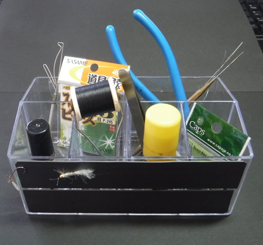
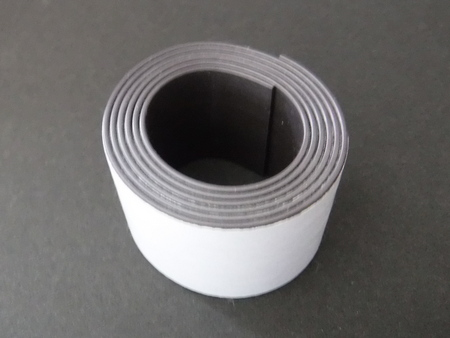

私のお気に入り
自作の道具たち フライタイイングツール・スタンド
自作して長年使ってきたのタイイングツール立てが手狭になってきた。なにぶん、机の上を整理しておくことができなくて、さまざまな道具が散らばり、マテリアルの下に隠れていざという時に見当たらなくて困っていたのだ。
最近は、足腰を鍛えるために、6kgの重り（2Lのペットボトル水入り3本）を背負って徒歩通勤をしている。ついつい途中にあるダイソーや他の百円ショップに立ち寄ってブラブラと見て回る。すると、ダイソーに手頃な大きさ、深さの小物入れがあった。ひょっとして200円の商品だったかもしれない

使っている状態。手前の黒い帯状のものが磁石テープ。
ついでに、磁石になっている柔軟なテープも買って、ケース側面に貼り、完成したフライを保持し、乾燥させるようにした。

同じくダイソーで買った磁石テープ
この商品の間仕切り底面はプラスチック製で硬いので、カッターナイフ、ダビングニードルなど、先のとがった物を、下向きに立てておく時には、何かクッション材を入れないと、刃先を痛めてしまう。そうかと言って、ダビングニードルを上向きに立てておくと、必ず手を突き刺す。(泣)
これから買われる方は、やはり百円ショップで、コルク板、スポンジ板、耐震用ジェルシートなど、適当なものを買い、間仕切りのサイズに合わせてカットして敷くと良いだろう。
安く済ませるなら、通販で届く段ボール箱を適当な大きさにカットして敷いてもOK。
全体が透明なので、中身がよく見えて都合が良い。お勧めの一品。
2021/07/21
私のお気に入り 目次へ
サイトマップ
ホームへ
お問い合わせ